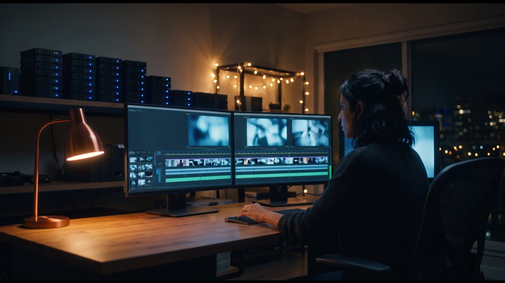
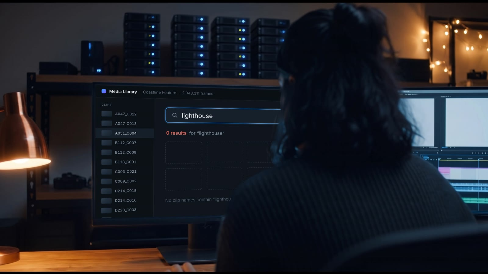
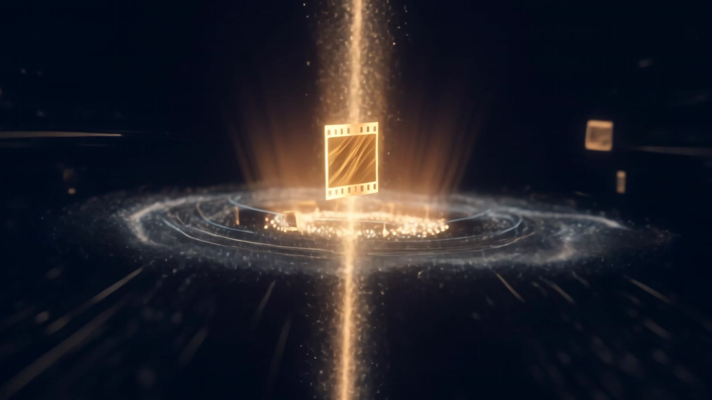
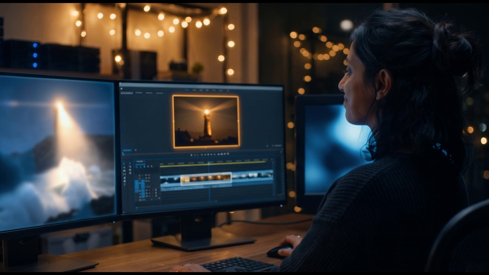

Sound on · 16:935 seconds
Spec film · November 2026
One Frame
A spec product film for Oracle AI Database.
An editor is hunting for one shot in two million frames. Searching by file name finds nothing. Describing the shot finds it in seconds. The film is based on a real, published Oracle customer story about AI Vector Search in a post-production pipeline.
Spec concept, made independently. Not affiliated with or endorsed by Oracle.
- Written & directed
- Rishi Patlolla
- Format
- Horizontal spec film · 1920×1080 · 24 fps
- Story
- Problem, technology, result: told without voiceover
- Design & keyframes
- Nano Banana Pro, from locked character and set references
- Motion
- Kling 4 single shots via the Runway API
- On-screen UI & titles
- Original interface and motion titles, tracked into the footage
- Music & sound
- Original score and sound design
- Orchestration
- Claude and GitHub Actions
Selected frames
Six beats, one search




Raw vs finalWhat changed
What changed
on the way to the cut.
Every shot was approved as a keyframe, checked as a clip, and fixed or replaced when it didn't hold up.
- Tested for sharpness, then switched modelsThe first multi-shot pass looked soft. A measured sharpness test across models moved the whole film to Kling 4 single shots for clean 1080p.
- Re-animated the search shotThe screen showed typing while her hands were still. The shot was regenerated so her hands type with the search.
- Built the interface by handAI can't render readable UI, so the media library, the search and the results were designed as an original interface and tracked onto her monitor.
- Fixed the eyelineShe was smiling at a blank screen. The found shot now plays on the monitor she's actually looking at.
- Wrote for reading speedOn-screen lines were cut to fit about three words a second, then animated word by word.
- Original score and soundKeys, glass, air and the sea, all made for this film, with one musical rise saved for the wave.